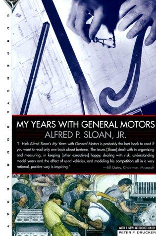

Library › History
My Years with General Motors — Summary & Key Lessons

The book that invented the modern corporation: decentralized divisions, financial controls, and a car for every purse and purpose.
📖 OPEN THE FULL INTERACTIVE BREAKDOWN →🌐 Read it in Hindi, Hinglish, Gujarati, Tamil & 22 more languages — free, with audio.
💡 The Big Idea
Sloan ran and wrote the playbook of the modern corporation. Joining GM's chaotic precursor (United Motors), he helped assemble Chevrolet-to-Cadillac into General Motors and designed its operating system: decentralized divisions with real autonomy, coordinated by financial controls (return on investment as the master metric, standardized accounting invented with Donaldson Brown), a ladder of brands ('a car for every purse and purpose'), the annual model change, and trade-in financing (GMAC, 1919) that unlocked mass credit purchasing. The famous strategic duel: Ford's 'any color so long as it's black' monopoly met GM's color, credit, annual novelty and segment strategy, and the market swung. The book also covers consumer research (the 1920s saturation debates), wartime production, and organization theory (the 'federalism' balance between division autonomy and central control) that Drucker and every management author since have been footnoting.
🧠 The 8 Key Lessons
Lesson 1: Segment or Die: One Product Cannot Own a Market Forever
A Car for Every Purse and Purpose
Ford's Model T strategy (one product, endlessly cheapened) dominated until Sloan's ladder (Chevrolet up to Cadillac, each brand a rung, customers trading UP within the family) matched the market's actual stratification. The insight: as a market matures, it fragments into segments by income, taste and use; the company that maps and staffs the ladder captures the customer's lifetime climb, not just their first purchase.
📖 Example: The famous swing: Model T buyers defected as incomes rose, because GM had a rung waiting at every income level, while Ford's single product (however brilliant) had a ceiling and no upstairs. Read the full example →
⚡ Do this: Draw your market's segment ladder by budget and use-case. If you occupy one rung, name which rung your customers graduate to, and decide whether you or a competitor collects their graduation.
Lesson 2: Credit Is a Product Feature
GMAC and the Used-Car Engine
GMAC (1919) financed car purchases, and the used-car trade-in became the flywheel: trade-ins lowered new-car effective prices, financed cars expanded the buyer pool beyond cash holders, and the resale market stabilized new-car values. Sloan's insight: in big-ticket categories, financing architecture is as decisive as the product. Modern equivalents: every subscription, trade-in program and buyback guarantee is Sloan's engine reborn.
📖 Example: The effective price of a new Chevrolet after trade-in beat a Model T's sticker for upgrade-minded buyers; Ford's cash-only model handed GM the aspirational majority. Read the full example →
⚡ Do this: Model your big-ticket product WITH a financing or trade-in mechanic. Compute the addressable market at zero-down monthly pricing versus cash sticker; the gap is your growth ceiling.
Lesson 3: Decentralize Operations, Centralize Measurement
Federalism with Coordinated Control
GM's structure: divisions (Chevrolet, Pontiac, Buick, Cadillac) run by general managers with real authority over their markets, coordinated centrally through standardized financial reporting and capital allocation (Brown's ROI system). The balance solved the eternal dilemma: big enough for scale economics, small enough for accountability. The discipline: autonomy without measurement is chaos; measurement without autonomy is paralysis; the design is always both rails together.
📖 Example: A Buick manager could reprice and restyle for his market within policy rails, while central staff could compare every division's return on capital on one page, and reallocate toward the winners without micromanaging them. Read the full example →
⚡ Do this: Split your company into units with one-page P&Ls this quarter (even informally). Give each unit one decision right they currently beg for, and one number they now own.
Lesson 4: Annual Novelty Beats Eternal Perfection (Until It Doesn't)
The Model Change
GM's annual model change (new styling yearly, engineered continuity underneath) converted durability from a virtue into a treadmill: owners became upgraders, used-car supply fueled financing, and the market shifted from need-based to fashion-based buying. It was commercially devastating (to Ford) and later criticized (planned obsolescence). The lesson cuts both ways: novelty cycles monetize aspiration and lock in habit, and they also plant the long-term seeds of distrust your successors inherit.
📖 Example: The yearly reveal became American ritual; decades later, the same mechanism drew criticism for waste and quality shortcuts, the long tail of a brilliant commercial engine. Read the full example →
⚡ Do this: Design your product's healthy novelty cycle: what changes on a rhythm (without breaking trust) to give customers a reason to return, and what stays sacredly constant to keep it honest?
Lesson 5: Consumer Research Exists to Overturn Convention
The Saturation Question
In the 1920s, industry consensus said the car market was saturated (everyone who wanted one had one). GM's research reframed: replacement demand, multiple-car households, styling preference and financing would keep expanding the market. The lesson: research that only confirms current behavior is inventory; research that questions category assumptions (who counts as a customer? what's a 'replacement cycle'?) is strategy.
📖 Example: GM's market analyses segmented owners by replacement intent and aspiration, finding growth where the consensus saw a closed market, and priced the ladder accordingly. Read the full example →
⚡ Do this: Write your market's consensus assumption ('the market is X, so growth is Y'). Commission or run one study designed to overturn it, not to confirm it.
Lesson 6: Standardize the Numbers Before You Scale the Company
Donaldson Brown's Arithmetic
GM's ascent ran on Brown's control systems: standardized accounting across divisions, ROI as the allocation discipline, forecast-and-actual cycles that exposed drift early. Before systems, GM was a conglomerate of chaos; after, it was a machine. The lesson: scaling without unified numbers means scaling a lie; the accounting system is the constitution of a multi-unit company.
📖 Example: The famous story of Brown tracing a division's profits to one inventory assumption and rewriting GM's reporting so every manager saw capital as a cost, not a birthright. Read the full example →
⚡ Do this: Pick your master metric (ROI, contribution margin, LTV:CAC) and rebuild every unit's reporting around it this quarter. One number, one language, one truth.
Lesson 7: Watch Your Successor's Incentives, Not Just His Talent
The Long Shadow
Sloan's system, dominant for decades, eventually ossified: divisions competed inward, finance outranked product, and the linked case study tells the 2009 ending (GM's bankruptcy) where the machine's heirs optimized metrics the market had stopped rewarding. The succession lesson: every control system encodes an era's assumptions; the job of later leaders is to audit the ASSUMPTIONS, not just the compliance.
📖 Example: The ROI machine that beat Ford became the machine that resisted small cars and quality revolutions, because the numbers said wait; the linked case study is the invoice for that patience. Read the full example →
⚡ Do this: List three assumptions your current metrics encode. Ask which one, if wrong, would bankrupt you, and install a dissent channel for exactly that.
Lesson 8: Write the Book Yourself
The Memoir as Institution
Sloan wrote this book partly to correct Drucker's famous study of GM, insisting the story of the corporation be told by its builder with the numbers in place. The meta-lesson: institutions need their builders' honest records; unwritten history gets written by outsiders with their own theses. Whether a company, a family business or a career: keep the builder's log, or the archive will be someone else's argument.
📖 Example: The book became the canonical management text (Drucker's critique and Sloan's reply are a paired classic), proof that the memoir can be as strategic as any acquisition. Read the full example →
⚡ Do this: Start your builder's log today: one dated page per month on what you decided, why, and what the numbers said. In ten years it will be your company's constitution.
✅ 5-Step Action Plan
- Map your market's segment ladder and decide who collects customer graduations.
- Model your product with financing or trade-in mechanics; price the monthly, not the sticker.
- Give each unit one owned decision and one owned number this quarter.
- Design a healthy novelty cycle: what rotates, what never does.
- Start a dated builder's log; write your own history before others do.
⚠️ When This Doesn't Work
Sloan wrote with an executive's precision but also an executive's pride: labor conflicts, the 1930s labor battles and GM's longer-term quality drift get minimal treatment, and the book is as much institutional self-defense (against Drucker's framing) as memoir. Post-1964 history (the linked case study's 2009 bankruptcy) shows what the system's heirs did with it. Read it as the source code of the modern corporation, with its bugs included.
💀 The Graveyard Proves It
🪄 General Magic — The iPhone, Built 15 Years Too Early by the Wrong Decade. Burn: $90M+; the future, mistimed. Read the full case study →
💬 Best Quotes from My Years with General Motors
- “A car for every purse and purpose.”
- “The exploitation of the used-car market was, in effect, the key to the mass production of new cars.”
- “Decentralization with coordinated control: the structure walks on two legs or falls.”
Interactive version: mark lessons as read, listen in your language, share quote cards.